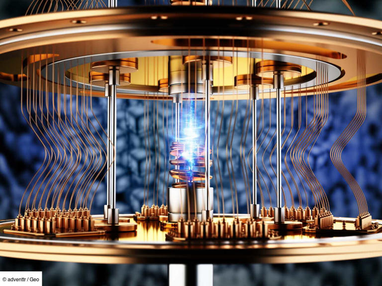

Qu'est-ce qu'un ordinateur quantique ?
Un ordinateur quantique est une machine qui exploite les principes de la mécanique quantique, une branche de la physique qui décrit le comportement des particules subatomiques. Contrairement aux ordinateurs classiques, qui utilisent des bits représentant des 0 ou des 1, les ordinateurs quantiques utilisent des qubits, capables de représenter plusieurs états simultanément grâce à des phénomènes comme la superposition et l'intrication quantiques.
Cette capacité unique permet aux ordinateurs quantiques de résoudre certains problèmes complexes bien plus rapidement que les ordinateurs traditionnels. Ces machines révolutionnaires pourraient transformer des domaines tels que la cryptographie, la chimie, l'intelligence artificielle, et bien d'autres, en ouvrant des possibilités jusque-là inaccessibles.
Cependant, les ordinateurs quantiques en sont encore à leurs débuts. Les chercheurs du monde entier travaillent à surmonter des défis techniques tels que la correction d'erreurs, la stabilité des qubits et l'intégration des technologies quantiques à des systèmes existants.
